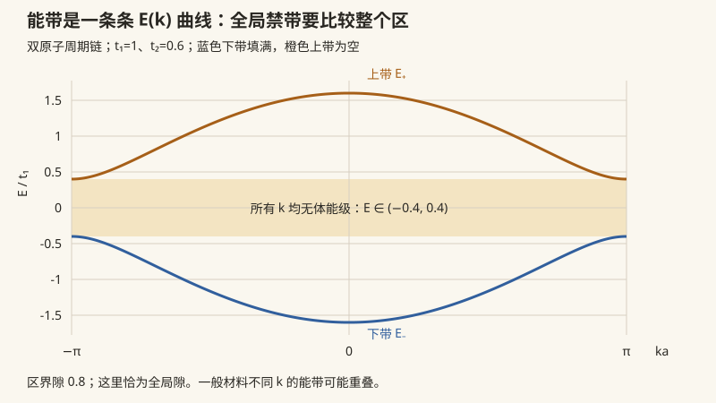

本页目录
固体 II · 能带与半导体
对标：Kittel §6–8 ｜ 前置：solid-01、qm-02（隧穿/方阱）、sm-03（Fermi 统计） 本科物理的压轴应用：周期势中的电子。Bloch 定理给出波函数的形态；在清洁、弱相互作用的独立电子近似下，能带、带隙与费米面给出导体/绝缘体/半导体的第一轮分类，掺杂与 pn 结再把能谱接到器件。真实输运还要检查散射、无序、相互作用与接触条件——这页的模型是可检验的骨架，不是对所有材料的单句判决。
学习层：为什么区界会“躲开”，以及空态怎样记账
1. 具体谜题：两条抛物线为什么不再相交？
把一维晶格的第一布里渊区区界放大。没有周期势的 Fourier 分量时，动量相差一个倒格矢的两支平面波在区界相交；一旦打开一个很小的周期势，它们会不会仍在同一点相交，只是整体能量略微移动？同时，若一条带被完全填满，电子明明还在运动，为什么净电流却可能为零？
先把这两个问题分开：第一个是简并二能级被耦合后怎样劈裂，第二个是整个布里渊区的速度如何做账。下面的实验只允许这两个最小模型说话。
2. 先预测：打开实验前写下可被判决的答案
- 令区界偏移为 \(q=0\)、耦合为 \(V=0.25\)。两条耦合能带的最小间隔是多少？它是否依赖 \(q\) 的正负？
- 把 \(q\) 从负侧穿过 0。哪一支的平面波权重会交换？在恰好 \(q=0\) 时，两种区界平面波的概率权重应各是多少？
- 在紧束缚带 \(E(k)=-2t\cos(ka)\)（\(t>0\)）里，带底 \(ka=0\) 与带顶 \(ka=\pi\) 的曲率符号分别是什么？相应的电子有效质量符号呢？
- 平衡分布下，半填充带与满带的速度和都可以因 \(k\leftrightarrow-k\) 对称而为零；那为什么只有部分填充有“可响应的空位”？试着预测一个小的 \(k\) 空间分布位移会改变哪一项。
3. 最小模型：同一套二能级与曲率语言
在区界附近取两支相差一个倒格矢的平面波，令 \(q\) 为偏离区界的无量纲量。选取基底 \(\{|+G/2\rangle,|-G/2\rangle\}\) 后，最小 Hamiltonian 可写为
当 \(V=0\) 时，对角元就是两条未耦合抛物线 \((q+1)^2\) 与 \((q-1)^2\)；当 \(q=0\) 时，\(E_\pm=1\pm|V|\)，因此区界的直接能隙是
这就是 avoided crossing 的最小数学版本：\(q\) 远离 0 时能量接近某一支平面波，\(q=0\) 时两支各含一半的区界基底概率权重（\(V\) 的符号改变相对相位，不改变这个 gap）。
对第二个问题，紧束缚玩具带给出
只在曲率非零且局部抛物线近似有意义时，才把它写成带符号的标量 \(m^*(k)=\hbar^2/[\partial^2E/\partial k^2]\)；在更高维应使用有效质量张量。带顶附近电子的 \(m^*\) 为负，若改用空穴准粒子描述，近抛物线极值处取相应的正质量与正电荷。
4. 动手操作：两个页签，两个可核对的账本
先在 A · 区界二能级 中依次点击“区界最小隙”“离开区界”“关闭耦合”。拖动 \(V\)（允许改变符号）和 \(q\)：实线是 \(E_\pm\)，虚线是未耦合色散；观察 \(q=0\) 的 gap、当前 \(q\) 的能级分裂以及两支在 \(|\pm G/2\rangle\) 基底中的权重。
再切到 B · 紧束缚带。改变 \(t\)、填充率 \(f\)、探针位置 \(ka\) 与小的试探分布位移 \(\delta(ka)\)。图中画出 \(E(k)\)、\(E_F\) 和占据的 \(|ka|\leq k_Fa=\pi f\) 区间；下方的 k 空间账本同时列出满带积分为何恒为 0，以及部分填充在这个独立电子玩具中为何可以对分布位移有响应。这里的“响应指标”只是速度积分，不能当作真实电导率。
无 JavaScript 时的静态读法：实验采用无量纲区界变量 \(q\)；A 的耦合能带由 \(E_\pm=q^2+1\pm\sqrt{4q^2+V^2}\) 给出，区界最小隙为 \(2|V|\)。B 假定一条自旋简并、独立电子、\(T=0\) 的一维单带，并暂取 \(a=\hbar=1\)；\(f\) 是该带已占据的比例。
A · 区界二能级（avoided crossing）
| 预设 | \(V\) | \(q\) | \(E_-(q)\) | \(E_+(q)\) | 区界 gap \(2|V|\) | 读法 | |---|---:|---:|---:|---:|---:|---| | 关闭耦合 | \(0\) | \(0\) | \(1\) | \(1\) | \(0\) | 真交叉；区界本征基底未被唯一选定 | | 区界最小隙 | \(0.25\) | \(0\) | \(0.75\) | \(1.25\) | \(0.50\) | 两支各为 \(50\%\) 的区界平面波概率权重 | | 离开区界 | \(0.25\) | \(0.60\) | \(1.36-\sqrt{1.5025}\) | \(1.36+\sqrt{1.5025}\) | \(0.50\) | 当前分裂大于区界 gap，权重向某一平面波偏转 | | 反号耦合 | \(-0.25\) | \(0\) | \(0.75\) | \(1.25\) | \(0.50\) | 能量和权重不变，站波相对相位改变 |
B · 紧束缚带与 k 空间账本
| 填充 \(f\) | 占据区间（平衡） | \(E_F/t\) | 满带速度和 / 试探位移后的 toy 速度积分 |
|---|---|---|---|
| \(0\) | 空带 | \(-2\)（边界约定） | \(0\) / \(0\) |
| \(1/2\) | \(\lvert ka\rvert\leq\pi/2\) | \(0\) | 平衡为 \(0\)；小位移可按 \(4t\sin(\pi f)\sin\delta(ka)\) 改变 |
| \(1\) | 整个第一布里渊区 | \(+2\)（边界约定） | \(0\) / 仍为 \(0\) |
“满带速度和”为 \(\int_{-\pi/a}^{\pi/a}(1/\hbar)(\partial E/\partial k)\,dk=0\)，因为 \(E(k)\) 在区边周期相同；这不是说单个电子没有速度。部分填充的平衡积分也可为 0，但有空态，分布位移后才有改变的空间。
5. 误区与边界：模型什么时候不能替你作判决？
- “填充决定导体”有前提。 在干净晶体、独立电子、近似平衡且 \(T=0\) 的最简能带图景中，非简并部分填充带通常有费米面与空态，满带若与下一带有隙则是 band insulator。带重叠的半金属、简并、多带补偿、无序局域化和有限温度都会改变这句速记；真实电导还需要散射时间、接触和线性响应，而不是只看一张填充图。
- 相互作用是实质边界。 例如整数填充的窄带可能因电子—电子相互作用形成 Mott 绝缘体；此时“非相互作用能带已填满/半填满”的判断不足以决定导电性。实验 B 明确只是独立电子玩具，不是在计算 Mott 转变或材料电导率。
- 满带不导流不是“电子都静止”。 满带中每个 \(k\) 的 \(v_g\) 可以非零；占满整个周期 Brillouin zone 后速度积分抵消，均匀外场把整套占据态平移后仍覆盖整个区，净和仍为零。部分填充有空位，分布失衡才可能产生净速度。
- 有效质量是局部曲率，不是永远为正的粒子质量。 要保留 \(\hbar^2\) 和二阶导数的括号；曲率为负时电子的带质量为负，空穴是换变量后的准粒子，不能把两者的符号混成一句“带顶电子质量正”。
- direct / indirect gap 不可混写。 定义 \(E_g=E_c(k_c)-E_v(k_v)\)；若 \(k_c=k_v\) 是 direct gap，理想光学跃迁近似竖直，带边光子能量才可近似 \(\hbar\omega\simeq E_g\)。若 \(k_c\ne k_v\) 是 indirect gap，光子动量几乎不够，带间跃迁还需声子补动量；即使是 direct gap，非带边跃迁、激子束缚、温度、展宽和多体修正也会使光子能量不等于一个固定的 \(E_g\)。
- avoided crossing 也有选择规则。 本页假定 \(V\) 在这两个基底间非零；若对称性使矩阵元为 0，交叉可以保留。公式的 \(q,V\) 是区界附近的无量纲局部模型，不是整个晶体所有能带的精确拟合。
6. 正式映射：从图上的量回到能带理论
“两条抛物线”对应自由电子在倒格矢平移后的简并平面波；\(q=0\) 是 Bragg 面，\(V\) 是周期势的 Fourier 矩阵元（常写作 \(V_G\)），\(E_\pm\) 是 Bloch Hamiltonian 在两维截断子空间中的本征值。图中的权重是本征矢在 \(|\pm G/2\rangle\) 基底上的模方；在区界它们组合成两种不同对称的驻波，因离子势期望值不同而分裂。
“余弦带”对应局域轨道之间的近邻跳跃；带宽 \(4t\) 是重叠强度的尺度，\(v_g\) 是能带斜率，\(m^*\) 是局部二阶曲率的倒数。填充滑杆给出单带费米点 \(\pm k_F\)；账本把“有空态可重新分配”与“满区积分恒为零”分开。把这些量接到真实材料时，还必须加入多带、费米—狄拉克温度展宽、散射、无序、声子与电子相互作用。
7. 迁移题：换一套参数仍能闭环吗？
- 取 \(V=-0.40\)，先不看图预测区界 gap 和 \(q=0\) 的两支权重；再取 \(q=0.80\)，说明为什么能量只看 \(V^2\) 而站波相对相位仍可能改变。
- 在 B 中取 \(t=0.8\)、\(f=3/4\)、探针 \(ka=0\) 与 \(ka=\pi\)。分别判断带宽、\(E_F\)、两个位置的曲率与电子 \(m^*\) 符号；若给占据分布一个小的 \(\delta(ka)\)，为什么满带的同样操作不能产生 toy 速度积分？
- 最后回答：若某材料的价带顶和导带底不在同一个 \(k\)，你会如何修改“\(E_g\) 就是光子能量”的说法？若整数填充体系出现 Mott 绝缘态，还需要哪一种超出本页独立电子模型的物理输入？
1. Bloch 定理与能带的起源

定理（Bloch） 周期势 \(V(\mathbf r + \mathbf R) = V(\mathbf r)\) 中的定态波函数必为
【推导骨架】 平移算符 \(\hat T_{\mathbf R}\) 与 \(\hat H\) 对易且彼此对易 ⇒ 共同本征态；\(\hat T\) 酉性给本征值 \(e^{i\mathbf k\cdot\mathbf R}\)——平面波调制 × 周期函数。\(\blacksquare\)（对称性 ⇒ 好量子数 \(\mathbf k\)（晶体动量）——Noether 哲学（mech-02）在离散平移群上的重演；\(\mathbf k\) 住在布里渊区（solid-01）。）
能带与带隙的两种看法（互补的极限）：
- 近自由电子【骨架】：弱周期势在 Bragg 面（区界）耦合简并的 \(\pm k\) 平面波——二能级简并微扰（qm-04）劈出带隙 \(2|V_G|\)：区界处驻波的两种驻法（波腹在离子上/间）能量不同——带隙 = Bragg 反射 + 简并劈裂；
- 紧束缚【推导】：原子轨道弱重叠，\(E(k) = \varepsilon_0 - 2t\cos ka\)（一维近邻跳跃 \(t\)）——孤立能级展宽成带（带宽 \(\propto\) 重叠 \(t\)）；\(N\) 个原子 → 每带 \(N\) 个 \(k\) 态 × 自旋 2。
两图合一：固体的能谱 = 允许带 + 禁隙交替。
2. 三分天下：填充与可用态（独立电子近似）
\(T = 0\) 电子按 Fermi 统计（sm-03）填带。下面是清洁晶体、独立电子、无特殊简并或拓扑项时的第一轮分类，而不是“填充”单独决定真实电导的普遍定理：
| 类型 | 最简能带条件 | 这张图能说什么 |
|---|---|---|
| 金属 | 费米能级穿过非简并能带，或不同能带发生重叠 | 费米面附近有未占据态；可在外场与散射共同作用下形成载流子响应 |
| 带绝缘体 | 若干孤立能带完全填满，费米能级落在带隙中 | 理想无相互作用模型中没有低能带内空位；有限温度/光激发跨隙需要激活 |
| 半导体 | 也是有隙的填充结构，但隙与温度、掺杂、激发尺度相当 | 载流子浓度可被热、光或掺杂显著改变；“小隙”不是一个材料无关的固定数 |
半金属、带重叠、无序局域化、有限温度、强散射都会让这张表失去充分性；整数填充也不排除相互作用导致的 Mott 绝缘态。
满带为何没有净带电流：在本页的一维普通能带模型中，群速度
因为周期边界两端的 \(E_n(k)\) 相同。满带中每个 \(k\) 的速度可以非零；抵消来自整个区的占据，而不是电子“都停了”。均匀外场在半经典图景中平移 \(k\)，但完整占据仍覆盖整个周期区，因此这项总和仍为零。部分填充的平衡分布也可能因 \(k\leftrightarrow-k\) 对称而净和为零，但存在空态，分布失衡后才有改变电流的空间；实际直流还需要散射与接触条件。
有效质量：一维曲率非零时
更高维应使用张量 \([m^{*-1}]_{ij}=\hbar^{-2}\partial_{k_i}\partial_{k_j}E\)。带顶曲率为负时是电子带质量为负；近似抛物线的空穴描述把缺失态换成正电荷、相应的正空穴质量，不能把两种准粒子的符号混为一个公式。
3. 半导体物理速成
掺杂：施主提供靠近导带的额外电子，受主在价带附近留下空穴，分别形成 n 型 与 p 型。电离能、补偿程度和电离比例依赖材料、杂质浓度与温度；在合适窗口内掺杂可以把载流子密度和电导调过许多数量级，但不存在对所有样品都成立的固定倍数。
pn 结【机制链】：接触 → 载流子互扩散 → 露出耗尽区电荷 → 内建电场阻止进一步扩散（平衡：化学势/Fermi 能级拉平——sm-02 的 \(\mu\) 在器件里执勤）。在理想、低注入、扩散主导的近似下，正偏压降低势垒并给出近似指数电流 \(I = I_0(e^{eV/k_BT}-1)\)；复合、串联电阻、隧穿与高注入会改变它，反偏也不等于所有真实器件的“零电流”。
由此长出的器件：晶体管用结或栅控调节载流子，构成逻辑开关；太阳能电池用光生载流子的分离产生电压；LED/激光二极管在合适的直接跃迁与复合条件下发光；CCD/CMOS 把结区电荷转成信号。具体器件的性能还受结构、缺陷、温度、工艺和封装影响，不能由一页能带图推出某个产品的固定晶体管数或性能。
direct / indirect gap 与光子能量：定义 \(E_g=E_c(k_c)-E_v(k_v)\)。若导带底和价带顶位于同一 \(k\)，是 direct gap，理想带边跃迁近似竖直，才可在忽略激子、温度和展宽等修正时写成 \(\hbar\omega\simeq E_g\)；若二者位于不同 \(k\)，是 indirect gap，光子的晶体动量太小，带间吸收/复合还要声子补动量。即使 direct gap，离开带边的载流子动能也会使光子能量高于 \(E_g\)，所以“\(E_g\) 就是光子能量”只是一条有条件的带边近似。
4. 练习与要点
例 1（紧束缚练手） \(E(k) = -2t\cos(ka)\)（取 \(t>0\)）：带宽 \(4t\)；带底的电子有效质量为 \(m^*(0)=\frac{\hbar^2}{2ta^2}\)，带顶则为 \(-\frac{\hbar^2}{2ta^2}\)。跳跃积分增大通常使局部曲率变大、带底电子质量的绝对值变小；能带工程会同时改变曲率、散射和多带耦合，不能只用一个 \(t\) 预测器件输运。
例 2（本征载流子数量级） 在非简并、近似热平衡的区间，带隙对本征载流子浓度给出主导指数 \(n_i\propto\exp[-E_g/(2k_BT)]\)；前因子还包含有效态密度，且 \(E_g\)、杂质电离和补偿会随材料、温度与应变改变。因此应先注明参考条件，再谈“数量级”，不能把一组室温材料数字当作普适常数。
例 3（LED 配色） 对带边直接辐射复合，发光光子能量可在理想近似下与相应的直接带隙同量级，\(\lambda\simeq hc/E_g\)；实际峰位会受温度、应变、合金成分、激子与器件结构影响，间接带隙材料还要考虑声子参与。\(\blacksquare\)
下一页：本科板块收官——数理方法补遗：特殊函数与 Green 函数，把前面各页"引用即用"的数学工具正式归档。